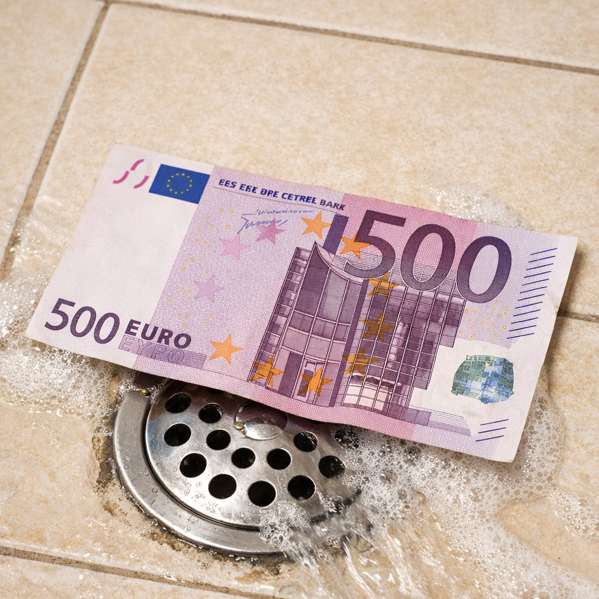
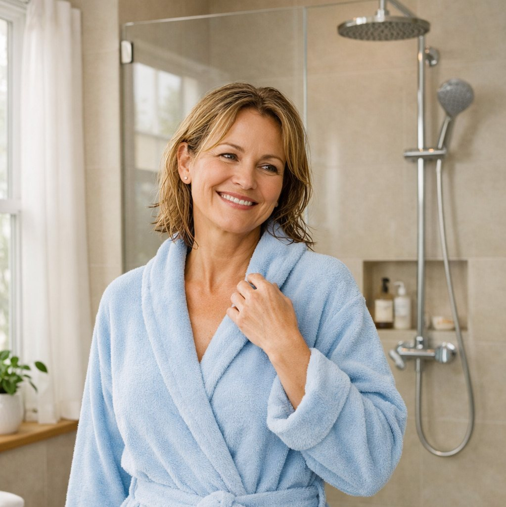
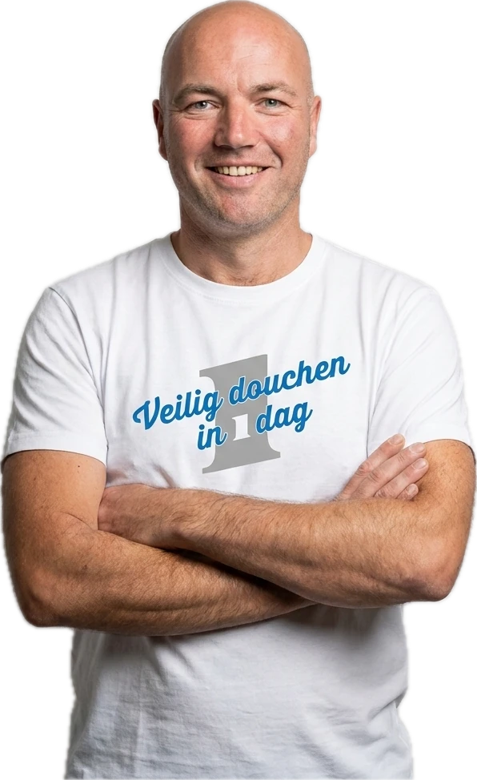

Badkamergevoel
Badkamergevoel
Voel u niet oud in uw eigen badkamer!
Vervang in één dag die gevaarlijke badkuip door een veilige en comfortabele cabine of inloopdouche. Duurzaam en betaalbaar, inclusief premie.
0493 33 39 88
Elke dag over die hoge rand?

Gewoon instappen.
Geen sprong over de rand. Ook als u alleen thuis bent.

Geld door de afvoer?

Duurzaam en betaalbaar.
Voor een jarenlange gemoedsrust.

Laat u uw premie wegdrijven?
Niet oud. Wel slim!
tot €1.250terug voor 65-plussers, via de Vlaamse aanpassingspremie.
Er geldt een inkomensgrens.
Leef langer, veilig thuis en comfortabel.
Bijna één op vier 65-plussers in België viel het afgelopen jaar.
Bron: Sciensano, Gezondheidsenquête 2023-2024.
Zo doen we dat

Gratis advies bij u thuis
Claude, de zaakvoerder, komt zelf langs.
In één dag klaar
Uw badkuip eruit, een veilige inloopdouche of cabine erin. Claude plaatst ze zelf.
Inclusief premie
We bekijken samen of u recht hebt op de aanpassingspremie.
Zo duurt jong nog een leven lang!
0493 33 39 88Liever mailen? info@ckservice.be
Badkamergevoel